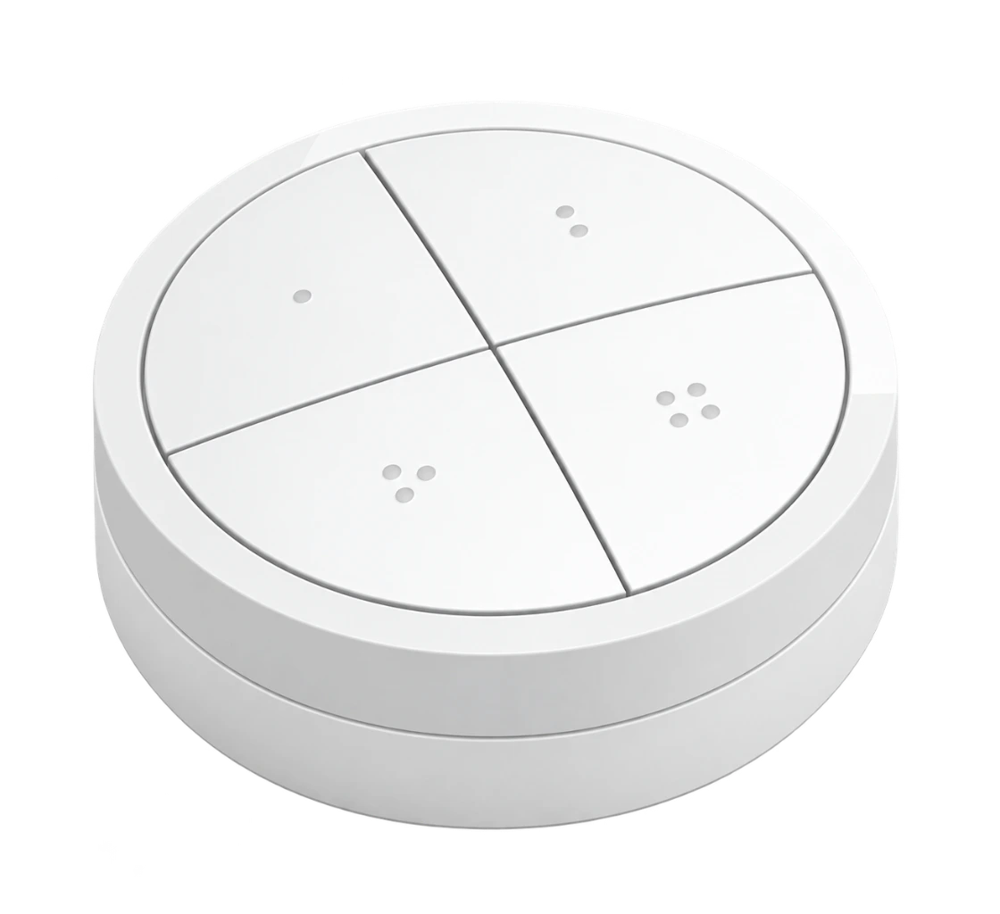
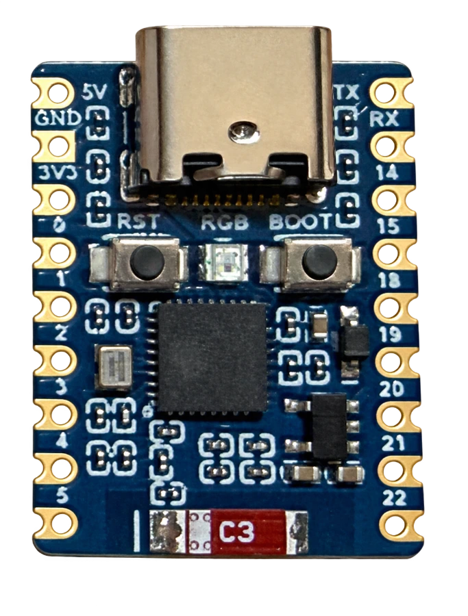

Roon
Zone, Play/Pause und Lautstärke direkt am Roon Server. Playlists und Meine Live-Radiosender als Favoriten aus Listen auswählen. Einstellungen im Zahnrad der Roon-Erweiterung.
So richtest du es ein →Ein Philips Hue Tap Dial. Ein kleiner ESP32-C6. Und deine Lieblingsmusik in Roon, auf BluOS oder WiiM – direkt per Drehring und vier frei belegbaren Tasten.

01
Eine Betriebsart ist aktiv. Die Einstellungen der anderen bleiben gespeichert.
Zone, Play/Pause und Lautstärke direkt am Roon Server. Playlists und Meine Live-Radiosender als Favoriten aus Listen auswählen. Einstellungen im Zahnrad der Roon-Erweiterung.
So richtest du es ein →Bluesound, NAD und weitere BluOS-Player direkt im Heimnetz steuern. Player suchen, gespeicherte Presets wählen und jeder Taste kurze und lange Aktionen zuordnen.
So richtest du es ein →WiiM direkt über seine lokale API steuern. Presets aus WiiM Home übernehmen. Play/Pause, Vor/Zurück und optional die eigene WiiM-Lautstärke am Ring bedienen.
So richtest du es ein →Ohne Zusatzrechner. Die Firmware läuft auf dem ESP. Keine Hue Bridge, kein Raspberry Pi, Docker, MQTT oder dauerhaft laufender PC nötig. Roon benötigt weiterhin einen Roon Server.
Steuert Musik, spielt sie aber nicht ab. Der ESP überträgt keine Musik, ist kein Roon-Audio-Endpunkt und ersetzt weder deinen Player noch einen DAC. Ein Tap Dial gehört zu genau einem Zigbee-Netz.
02
Für die Bedienung genügen der Regler, ein ESP und dein vorhandenes Audiosystem.

03
Die Ersteinrichtung läuft im Browser direkt über USB. Ein Setup-WLAN oder die Adresse 192.168.4.1 werden dafür nicht benötigt.
Chrome oder Edge öffnen, ESP per USB-Datenkabel verbinden und im Installer auswählen.
Installer-Dialog schließen. Neu einrichten oder eine Sicherung desselben ESP direkt wiederherstellen.
Dein 2,4-GHz-WLAN auswählen. Für Roon zusätzlich den Server wählen und die Erweiterung freigeben.
Webkonfiguration öffnen, Tap Dial koppeln und Roon, BluOS oder WiiM mit den gewünschten Aktionen einrichten.
04
Vier Tasten, kurze und lange Aktionen und ein eigener Drehring. Die Profile bleiben voneinander getrennt.
Erweiterung aktivieren, Zone auswählen und Tasten belegen. Die Sprache lässt sich unabhängig von Roon wählen. Der Batteriestand des Tap Dial erscheint nach seiner ersten Rückmeldung in der Erweiterungs-Statuszeile.
Zur vollständigen Anleitung →Player im Netzwerk auswählen oder seine Adresse eintragen. Gespeicherte Presets, Tastenaktionen sowie Empfindlichkeit und dB-Schritte getrennt festlegen.
Zur vollständigen Anleitung →WiiM finden, Presets aus WiiM Home auswählen und Tasten zuordnen. Die direkte WiiM-Lautstärkeregelung ist eine eigene Option und bei einem neuen Profil zunächst ausgeschaltet.
Zur vollständigen Anleitung →05
Gehäuse, Deckel und zwei Fußvarianten — jedes Bauteil mit eigener Vorschau und den originalen STL-Dateien.
06
Die vollständige Anleitung führt auch durch Erstkopplung, Sicherung und Fehlersuche.
Nein. Der ESP ist der Zigbee-Koordinator. DialCaptain arbeitet eigenständig. RoonPilot und eine RME Bridge können dein Roon-System ergänzen, sind aber keine Voraussetzung.
Alle drei Profile bleiben gespeichert. Erst das Speichern aktiviert die neue Betriebsart. Roon-Zone, Autorisierung, Favoriten und die eigenen BluOS-/WiiM-Zuordnungen werden nicht durch einen Wechsel gelöscht.
Roon: 1 bis 4 native Roon-Schritte pro Rastung; die Einheit bestimmt der gewählte Ausgang. BluOS: 0,5 / 1 / 2 dB. WiiM: optional 1 / 2 / 5 Prozentpunkte. Empfindlichkeit und Schrittgröße sind getrennte Einstellungen.
Ja. Der Datei-Export sichert Einstellungen und die gespeicherte Tap-Dial-/Zigbee-Zuordnung für denselben ESP. Die Datei enthält Zugangsdaten und wird auf deinem Computer gespeichert.
Roon, BluOS und WiiM sind implementiert; Grundbedienung und mehrere Geräteabläufe wurden getestet. Vollständige Erstkopplung eines neuen Tap Dial und ein Restore nach echtem Factory-Flash benötigen noch gesonderte Hardwareabnahme. Eversolo und ein OTA-Updater sind nicht implementiert.